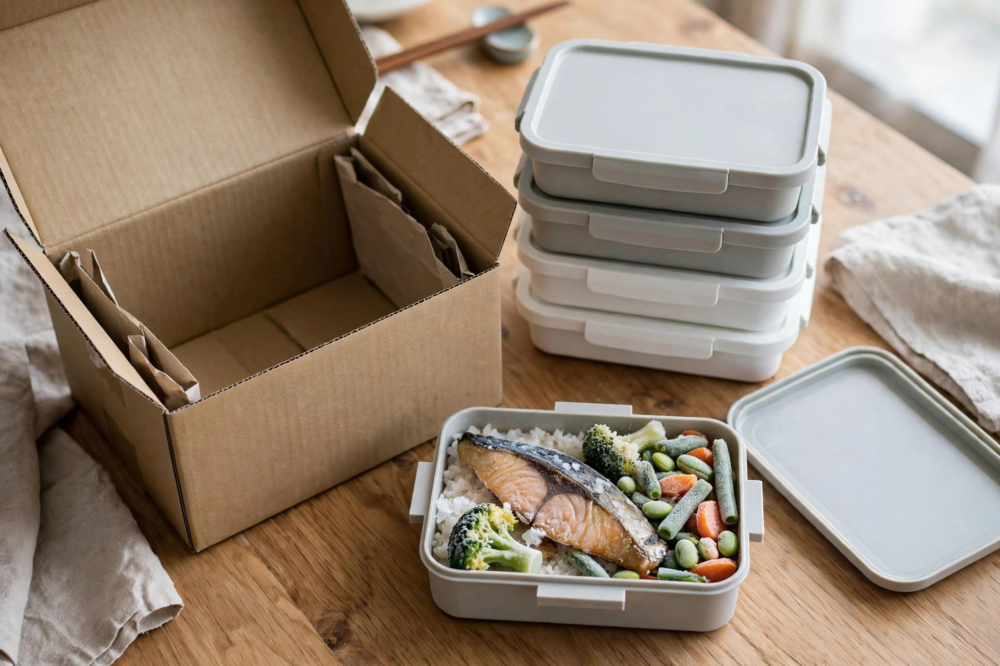

単価は「送料込み」でないと並ばない

冷凍弁当の料金表示は、本体価格の書き方がサービスごとに違います。送料はクール便の実費が1回990円前後かかる型が中心で、7食に割ると1食あたり約140円、注文の仕方で最大で約200円の差になります。この記録では、通常の1食単価と、定期を続けた場合の単価を分けて書きます。味や満足度の順位付けはしません。
通常価格と定期継続後の単価
| サービス | 通常1食単価 | 定期継続後の単価 | 送料 | 回数条件 |
|---|---|---|---|---|
| ワタミの宅食ダイレクト（いつでも二菜） | 約360円〜 | コースにより変動 | クール便実費型 | 定期は3回以上のお届けが条件 |
| 食のそよ風 | 522円 | — | 公式で未確認 | 6回未満の解約で差額500円／回が別途かかる |
| まごころケア食 | 単品 約591円 | 定期 394〜426円 | クール便実費型 | 公式ページで確認 |
| nosh | 612〜719円 | 継続割引の最安 492円 | クール便実費型 | 継続回数で割引が進む |
| 三ツ星ファーム（7食コース） | 約926円 | 公式で未確認 | クール便実費型 | 公式で未確認 |
数値は2026年11月26日に各公式サイトで確認した表示です。「公式で未確認」と書いた項目は、公式の本文で取り切れなかったもので、推測では埋めていません。価格は毎月7日に記録し直し、この表に積み重ねます。
編集部の見方
通常単価の幅は約360円から約926円までありますが、順位の話ではありません。定期継続後の単価は下がる代わりに回数条件が付き、途中で止めると差額が出るサービスもあります。単価の安さだけで選ぶと、冷凍庫に入らない、回数条件に縛られる、という別の負担が残ります。容量の話は冷凍庫の計算ページで先に計算できます。
送料の型で、合計の見え方が変わる
送料は大きく4つの型に分かれます。クール便の実費型（1回990円前後、北海道・沖縄で1,320〜2,500円）、注文額で変わる階段型、注文のない週も手数料が出る生協の週手数料型、送料込み型です。実費型では1回にまとめる食数を増やすほど1食あたりの送料は下がりますが、冷凍庫の空きと引き換えになります。単価と容量は、別々にではなくセットで見る項目です。
申し込み先
PR・広告
ワタミの宅食ダイレクト
1食 約360円〜 （いつでも二菜、2026年11月26日確認）
通常単価が最も低い帯のサービスです。定期は3回以上のお届けが条件のため、初回は食数と冷凍庫の空きを見てから決める形が合います。
編集部の見方：単価の記録を始める入口として分かりやすい一方、回数条件があるため、続ける前提が立つ家庭向きです。
ワタミの宅食ダイレクト公式サイトで料金を見る
出典：ワタミの宅食ダイレクト公式サイト、食のそよ風公式サイト、まごころケア食公式サイト、nosh 公式サイト、三ツ星ファーム公式サイト（いずれも2026年11月26日確認）。この記事には広告（PR）が含まれます。提携の有無で並び順や記録の内容は変えていません。